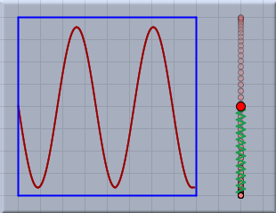
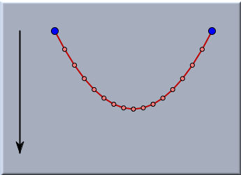
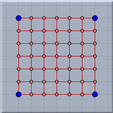
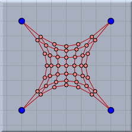
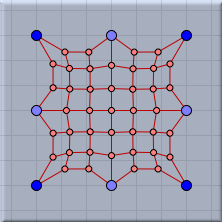

Rubber Band
In
CindyLab a rubber band is a
Spring that has a resting length of zero. Rubber bands are constructed by a press/drag/release sequence as in the
Add a Line mode. If the endpoints of the spring segment are not already present in the drawing, free masses will be added. A rubber band affects the two masses at the endpoints according to the formula
|
force = springconstant ∗ length
|
Here
springconstant is a characteristic constant of the rubber band that can be adjusted in the inspector, and
length is the distance between the two points. Thus if two mass-objects are at a certain distance from each other and connected by a rubber band, they will be attracted to each other. Since the attractive force is proportional to the distance of separation, the farther apart the masses are, the stronger the force.
If no global friction is present in the
Environment, a system of masses and rubber bands will oscillate wildly. The following picture shows the situation of one free mass-point that is connected to a rubber band whose other end is tied to a regular (fixed) geometric point. The curve on the left shows the resulting oscillation of the point. (The curve was generated by the
drawcurves(...) operator of
CindyScript.)
 |
| Trace of a mass-point with unit velocity |
If one uses the
Environment to add some global friction, a damping of the oscillation will occur. In such a case, the system will converge to an equilibrium situation in which it comes to rest. The following picture shows a chain of masses connected by rubber bands under the influence of
Gravity.
 |
| A chain of mass-objects and rubber bands under the influence of gravity |
Networks of rubber bands exhibit interesting behavior. In a sense, such networks behave like spider webs. The following pictures show a gridlike arrangement of masses and rubber bands with various points pinned to the ground plane in the equilibrium situation.
 | |
 | |
 |
The net before start
| |
Four pinned points
| |
Eight pinned points
|
Inspecting and CindyScript
Rubber band,
Spring, and
Coulomb Force are objects that can be transformed one into another. A detailed discussion of the very powerful spring inspector as well as of the
CindyScript interface can be found in the documentation to
Spring mode.